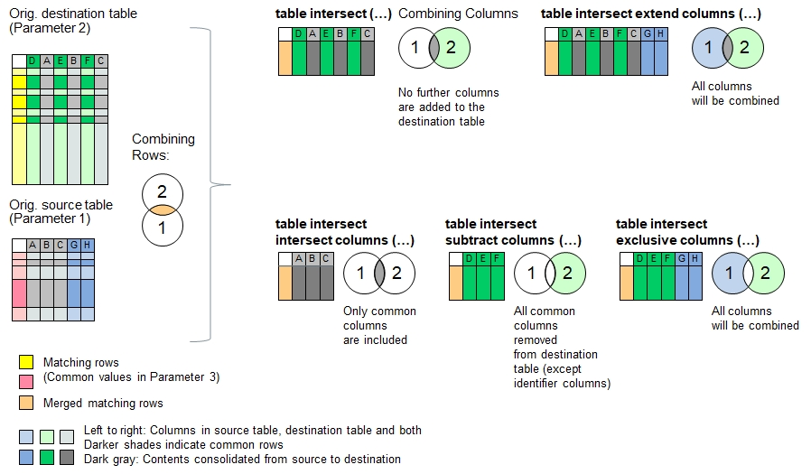

Function Names
table intersect, table intersect extend columns, table intersect intersect columns, table intersect columns, table intersect exclusive columnsDescription
The functions described here intersect the contents of the source table into the destination table. Identifier columns can be defined for both tables in order to
identify the overlapping table rows (e.g. same first and last names).
For the merging process, the principle of intersection is applied. After the function call, the destination table will only contain those rows which
share the same data in the identifier columns in both source and destination tables, where the data in the rows from the source table has been consolidated into
the corresponding rows in the destination table using available consolidation actions. The consolidation actions
work similarly like in the function table consolidate() where exactly two rows are consolidated into one row.
In case the two tables contain multiple equal values in the identifier columns (for example if only the first name has been referred), then every affecting row in the
source table will be consolidated in one row in the destination table and then checked off as 'done'. If another row in the source table has the same value, then
the next match further below in the destination table will be seeked. If the source table contains more repeated contents in the identifier column than in the
destination table, then the remaining rows will be added to the end of the destination table.
The following functions use different approaches to combine the data columns:
| table intersect | No further columns are added to the destination table |
| table intersect extend columns | Columns in the source table but not found in the destinationtable will be added to the target table (union set) |
| table intersect intersect columns | Removes columns from the destination table if they do not exist in the source table (intersection) |
| table intersect subtract columns | removes columns from destination table if they are found in the source table, but keeps the identifier columns. |
| table intersect exclusive columns | Removes columns found in both source and destination table, but keeps the identifier columns (exclusive OR). |

Note: If the destination table does not yet exist, or if the table is entirely empty (i.e. no header inside), then the data in the source table will be copied into the destination table.
Typical applications:
- Finding commonalities in mulitple tables
- Helful to identify the degree of standardization of items (e.g. re-use of components listed in bills of materials)
Call as: procedure or function
Restrictions
Indirect parameter passing is disabled
Parameter count
2-6 (Max 3 for function names 'table intersect subtract/exclusive columns').
See table merge() for parameter and return value description
Program Examples with 'table intersect ...'
Merging tables into one without identifier columns specified
echo("Loading farms in Hillboro and Hillville");
table load( hb, "Examples/Table Merge Examples Hillboro.csv");
table load( hv, "Examples/Table Merge Examples Hillville.csv");
echo("Farms in Hillboro:");
table list( hb );
echo("Farms in Hillville:");
table list( hv );
count[] = table intersect( hv, hb );
echo("Hilltown is a merger of Hillboro and Hillville (", count[], " rows consolidated):");
table list( hb );Output: Table will be empty because no identifier column is specified, so every column is unique
Loading farms in Hillboro and Hillville
Farms in Hillboro:
0 : Organic | Place | Farmer | Wheat | Oat | Sheeps | Cows | Acres | Speciality
1 : No | Hillboro | F. Fuller | 3 | | | | 4 | Hogs
2 : Yes | Hillboro | R. Rudy | 19 | | 20 | 24 | 21 | Restaurant
3 : | Hillboro | D. Daniels | 2 | | | | 3 |
4 : No | Hillboro | M. Miller | 2 | 1 | | | 5 |
5 : Yes | Hillboro | K. Klein | 10 | 10 | 40 | 30 | 28 | Vegetables
6 : | Hillboro | P. Pomme | | | 50 | 40 | 21 | Apples
Farms in Hillville:
0 : Place | Farmer | Acres | Wheat | Barley | Corn | Cows | Organic | Speciality
1 : Hillville | M. Miller | 20 | 4 | | 5 | 30 | | Hops
2 : Hillville | F. Fuller | 18 | 5 | 9 | | 22 | Yes | Pigs
3 : Hillville | B. Beaver | 23 | 1 | 4 | 3 | | Yes | Sugar Pea
4 : Hillville | J. Jill | 14 | 8 | 1 | 3 | 10 | |
5 : Hillville | D. Daniels | 21 | | 18 | | 0 | | Lodging
Hilltown is a merger of Hillboro and Hillville (0 rows consolidated):
0 : Organic | Place | Farmer | Wheat | Oat | Sheeps | Cows | Acres | Speciality
Try it yourself: Open REF_Function_table_intersect00.b4p in B4P_Examples.zip. Decompress before use.
Declare 'Farmer' as unique identifier
table load( hb, "Examples/Table Merge Examples Hillboro.csv");
table load( hv, "Examples/Table Merge Examples Hillville.csv");
count[] = table intersect( hv, hb, Farmer );
echo("Hilltown is a merger of Hillboro and Hillville (", count[], " rows consolidated):");
table list( hb );Output: 3 farmers with land in both towns have been consolidated.
Hilltown is a merger of Hillboro and Hillville (6 rows consolidated):
0 : Organic | Place | Farmer | Wheat | Oat | Sheeps | Cows | Acres | Speciality
1 : No | Hillboro | F. Fuller | 3 | | | | 4 | Hogs
2 : | Hillboro | D. Daniels | 2 | | | | 3 |
3 : No | Hillboro | M. Miller | 2 | 1 | | | 5 |
Try it yourself: Open REF_Function_table_intersect01.b4p in B4P_Examples.zip. Decompress before use.
Merge data in smart way and add 2 columns from source table:
table load( hb, "Examples/Table Merge Examples Hillboro.csv");
table load( hv, "Examples/Table Merge Examples Hillville.csv");
count[] = table intersect extend columns( hv, hb, Farmer, '*', { must match, append, 5:sum, append }, ", " );
// '*' corresponds to {Organic, Place, Wheat, Oat, Sheeps, Cows, Acres, Speciality}
echo("Hilltown is a merger of Hillboro and Hillville (", count[], " rows consolidated):");
table list( hb );Output: 3 farmers with land in both towns have been consolidated.
Hilltown is a merger of Hillboro and Hillville (6 rows consolidated):
0 : Organic | Place | Farmer | Wheat | Oat | Sheeps | Cows | Acres | Speciality | Barley | Corn
1 : (Inconsistent!) | Hillboro, Hillville | F. Fuller | 8 | | | 22 | 22 | Hogs, Pigs | 9 |
2 : | Hillboro, Hillville | D. Daniels | 2 | | | 0 | 24 | Lodging | 18 |
3 : No | Hillboro, Hillville | M. Miller | 6 | 1 | | 30 | 25 | Hops | | 5
Try it yourself: Open REF_Function_table_intersect02.b4p in B4P_Examples.zip. Decompress before use.
Merge data in smart way and keep intersected columns:
table load( hb, "Examples/Table Merge Examples Hillboro.csv");
table load( hv, "Examples/Table Merge Examples Hillville.csv");
count[] = table intersect intersect columns( hv, hb, Farmer, '*', { must match, append, 3:sum, append }, ", " );
// '*' corresponds to {Organic, Place, Wheat, Cows, Acres, Speciality}
echo("Hilltown is a merger of Hillboro and Hillville (", count[], " rows consolidated):");
table list( hb );Output: 3 farmers with land in both towns have been consolidated.
Hilltown is a merger of Hillboro and Hillville (6 rows consolidated):
0 : Organic | Place | Farmer | Wheat | Cows | Acres | Speciality
1 : (Inconsistent!) | Hillboro, Hillville | F. Fuller | 8 | 22 | 22 | Hogs, Pigs
2 : | Hillboro, Hillville | D. Daniels | 2 | 0 | 24 | Lodging
3 : No | Hillboro, Hillville | M. Miller | 6 | 30 | 25 | Hops
Try it yourself: Open REF_Function_table_intersect03.b4p in B4P_Examples.zip. Decompress before use.
Merge data in smart way and subtract the columns:
table load( hb, "Examples/Table Merge Examples Hillboro.csv");
table load( hv, "Examples/Table Merge Examples Hillville.csv");
count[] = table intersect subtract columns( hv, hb, Farmer );
echo("Hilltown is a merger of Hillboro and Hillville (", count[], " rows consolidated):");
table list( hb );Output: 3 farmers with land in both towns have been consolidated.
Hilltown is a merger of Hillboro and Hillville (0 rows consolidated):
0 : Farmer | Oat | Sheeps
1 : F. Fuller | |
2 : D. Daniels | |
3 : M. Miller | 1 |
Try it yourself: Open REF_Function_table_intersect04.b4p in B4P_Examples.zip. Decompress before use.
Merge data in smart way and show all columns except comomon ones:
table load( hb, "Examples/Table Merge Examples Hillboro.csv");
table load( hv, "Examples/Table Merge Examples Hillville.csv");
count[] = table intersect exclusive columns( hv, hb, Farmer );
echo("Hilltown is a merger of Hillboro and Hillville (", count[], " rows consolidated):");
table list( hb );Output: 3 farmers with land in both towns have been consolidated.
Hilltown is a merger of Hillboro and Hillville (6 rows consolidated):
0 : Farmer | Oat | Sheeps | Barley | Corn
1 : F. Fuller | | | 9 |
2 : D. Daniels | | | 18 |
3 : M. Miller | 1 | | | 5
Try it yourself: Open REF_Function_table_intersect05.b4p in B4P_Examples.zip. Decompress before use.
Tables with multiple non-unique identifiers being merged:
In case you plan to merge two tables with a one or a selection of column identifiers which cannot guarantee uniqueness, e.g. a list of names identified by first name only, then this function will match first name pairs first, then the next ones below, and so forth. As a result, every row is considered only once. Long story short: Every row in the destination table will be consolidated only once. The following code example demonstrates this:
One Jill and tow Micheles will be consolidated:
table load( h1, "Examples/Table Merge Examples Hobbies 1.csv");
table load( h2, "Examples/Table Merge Examples Hobbies 2.csv");
echo("Hoobies 1:"); table list( h1 );
echo("Hoobies 2:"); table list( h2 );
count[] = table intersect( h2, h1, Name, '*', append, ', ' );
echo("Combined list of hobbies (", count[], " rows consolidated):");
table list( h1 );The outcome
Hoobies 1:
0 : Name | Hobby | Sport | Color | Animal
1 : Jill | Games | Snowboard | Gray | Dog
2 : Michele | Games | | Pink | Cat
3 : Michele | Reading | Riding | Red | Horse
4 : Jill | Theatre | Sailing | Turquois | Whale
Hoobies 2:
0 : Name | Hobby | Sport | Color | Animal
1 : Michele | Playing | Golf | Brown | Tiger
2 : Michele | Writing | Riding | Magenta | Pony
3 : Michele | Photography | Soccer | Blue | Fish
4 : Michele | Movies | Handball | Green | Crabs
5 : Jill | Drama | Surfing | Skyblue | Trouts
Combined list of hobbies (4 rows consolidated):
0 : Name | Hobby | Sport | Color | Animal
1 : Jill | Games, Drama | Snowboard, Surfing | Gray, Skyblue | Dog, Trouts
2 : Michele | Games, Playing | Golf | Pink, Brown | Cat, Tiger
3 : Michele | Reading, Writing | Riding, Riding | Red, Magenta | Horse, Pony
Try it yourself: Open REF_Function_table_intersect06.b4p in B4P_Examples.zip. Decompress before use.
See also
table merge
table overlay
table subtract
table exclude
table consolidate